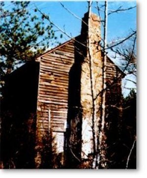

 |
PEGRAM HOMESTEAD This is a photo of an early Pegram homestead in Warren Co., NC. The picture was taken many years ago by a Pegram cousin still living in the area. The house has long been abandoned to the elements and may no longer be standing. We know that it was the home of John L. Pegram, grandson of George Pegram and may have been the home where he was raised by his maiden aunts, the daughters of George Pegram. This is a side view that shows the door to the "root-cellar". |